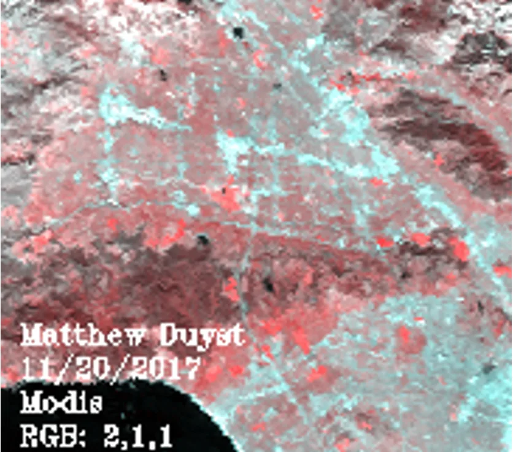
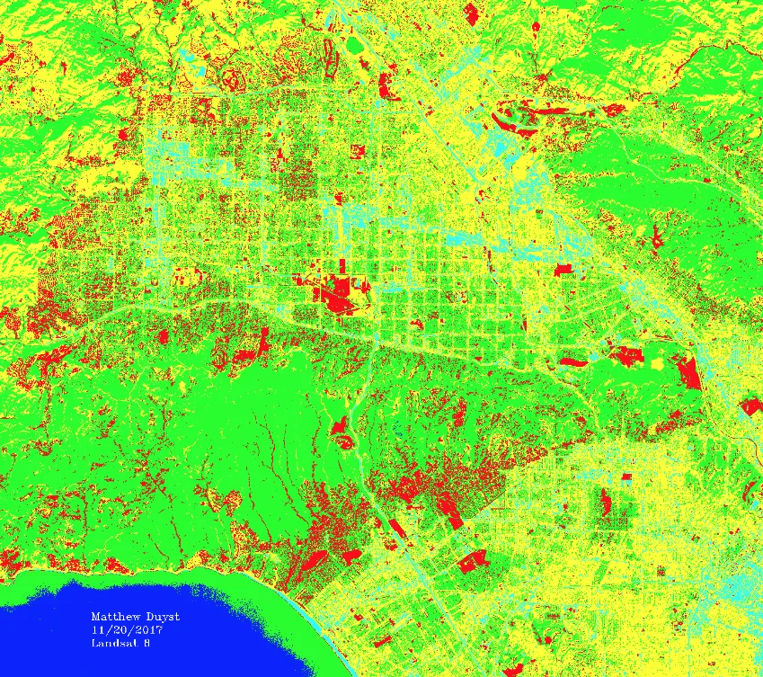
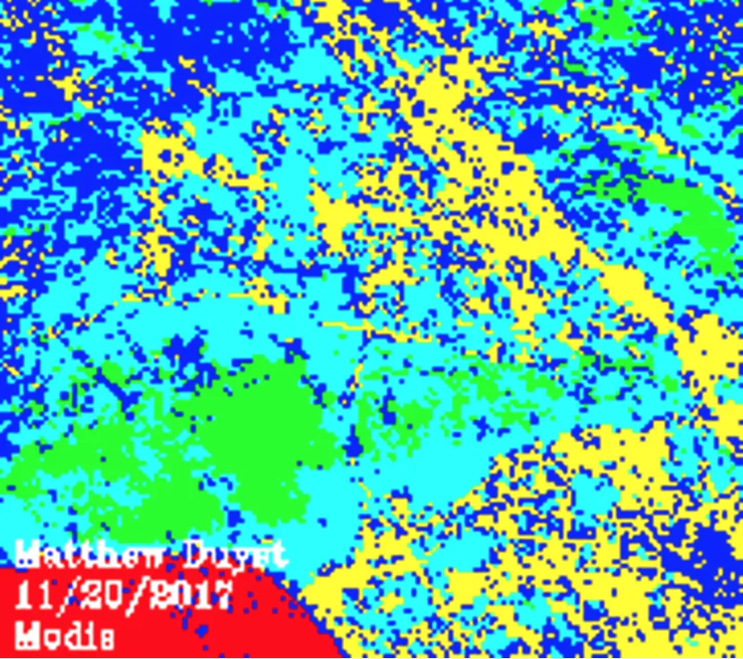
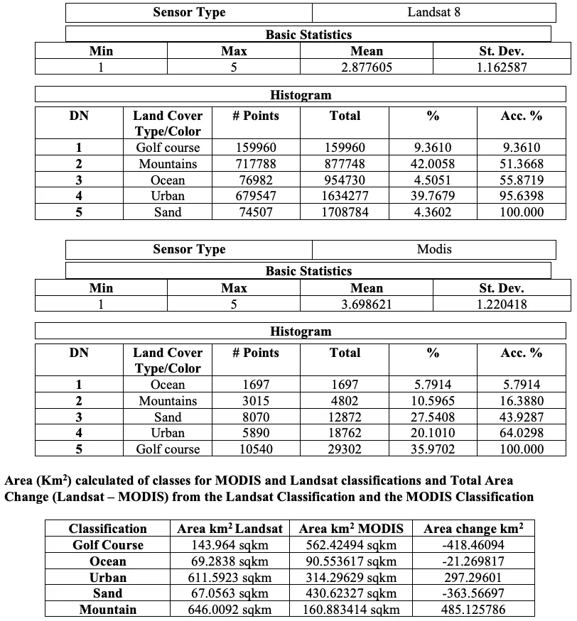

UCLA coursework, 2014 to 2018
Urban Applications of Supervised Classification: Landsat vs. MODIS
This project underscores the necessity of using high spatial resolution sensors when mapping urban centers, by contrasting a fine-resolution Landsat8 image with a medium-resolution MODIS image in Los Angeles. This exploration of using different spatial resolutions is coupled with the introduction of Supervised Classification, as we examine varying land cover types embedded in an urban setting.
Supervised Classification allows more autonomy than its counterpart, Unsupervised Classification. A Supervised Classification gives the creator the ability to designate specific Regions of Interest (ROIs) in the image that correspond to different land cover types. The user can then specify the amount of pixel values or spectral indices for each class.
Obtaining the Data:
12 Landsat images (Landsat8 OLI) were obtained through the USGS Global Visual Viewer (Glovis), with the approximate coordinates set for Los Angeles (LAT: 34, LON: -118). The time period isolated was November 5th, 2013.
The MODIS images were provided by NASA Reverb. An 8-day composite was selected (MODIS Terra Surface Reflectance 8-Day L3 Global 250m). MODIS imagery is available in 250m resolution - the one selected for this study - with 2 bands available: Near-Infrared (NIR) and Red. MODIS imagery is also available in 500m resolution with 6 bands. I decided to sacrifice having a higher spectral resolution for a finer spatial resolution and used 2 bands (NIR & Red) for the classification. The 8-day composite downloaded corresponds best with the Landsat November 5th image, taken between the dates of November 1st and November 8th.
Comparing the pixel values for Band 1 and Band 2 - as well as units, wavelength range, spectral signature, and spatial resolution - between the Landsat image and MODIS image is imperative for the success of this project. Through careful analysis, it was decided that Landsat's Band 4 (Red) and band 5 (NIR) were most comparable with the 250m MODIS data.
Preparing Data for Classification - Landsat vs MODIS


The first step in preparing the Landsat image for classification was stacking Band 4 and Band 5 together. The next step was to subset our newly stacked image. The general Los Angeles area needed to have prominent features - like the Bob Hope Airport (North West Corner), Rose Bowl Stadium (North East Corner), Santa Monica Pier (South West Corner), and LAX (South East Corner). A Polygon ROI including these 4 features was created, and the data was subset for the ROI.
The newly subset Landsat image was loaded using RGB = 5,4,4. The MODIS image was re-projected, subset to the same region as the Landsat image, and loaded with the band combination RGB = 2,1,1.
The dominant colors in the image above are varying shades of red - some appearing as a darker maroon, others a bright red. Red seems to denote the vegetation in the ROI, the brightest red seen in the image above signifying agricultural fields and golf courses. There are also shades of white and grey spread intermittently throughout the image.
Supervised Classification - Maximum Likelihood (Landsat vs MODIS)


The Supervised Classification used was 'Maximum Likelihood,' which assumes that the statistics for each class in each band are normally distributed. The computer algorithm then calculates the probability that a given pixel belongs to a specific class. Each pixel is assigned to the class with the highest probability (the maximum likelihood).
The remaining pixels in the image are classified by the Supervised Classification algorithm using training ROIs - which the user designates as the representation of each land cover class. 5 land cover classes were created for the images: Urban, Ocean, Mountains, Golf Courses, and Sand. The variation in number of ROIs created determine how many land cover types will be classified in the image. The more specific the ROI, the better the classification. A careful balance between covering enough pixels to spectrally represent each land cover type - and covering too large of an area that you lose specificity - must be maintained when classifying the ROI.
Training ROIs were created for the images according to their band combinations - RGB = 4,3,3 (Landsat) and RGB = 2,1,1 (MODIS). When setting up the Maximum Likelihood Classification, regions were designated as separate classes and the Probability Threshold was set to 'None.' These classifications were then overlayed onto the originally stacked image for evaluation. When the land cover types for both Landsat and MODIS images matched, statistics and histograms were computed.
Landsat achieves a much higher resolution for identifying nuanced areas, such as urban dwellings. This is why Landsat is often used for spatial objects. MODIS, on the other hand, would be preferred when analyzing temporal settings - like a daily land cover change among urban dwelling. The largest visible difference of classification between the Landsat and MODIS image was between mountain ranges. This may be because the Supervised Classification over-classified these large regions - it denoted general areas as 'mountains' that were nearby roads or urban dwellings.
Histogram and Statistics for Classification - Landsat vs. MODIS

The chart above uses statistics and histograms to showcase the two differing sensors' ability to classify land cover type for the subset ROI. Landsat 8 had a mean of 2.88, with a standard deviation of 1.16. MODIS had a mean of 3.70, with a standard deviation of 1.22. The DN associated with each land cover type is shown through the histogram breakdown of the chart. The final portion of the chart - "Total Area Change" - is calculated by subtracting the area from Landsat 8 classification with the area from MODIS classification. Negative values, like those for Golf Course, Ocean, and Sand, represent a gross overestimation of land cover type by the differing sensors.